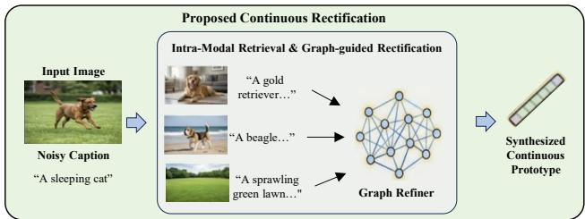

Figureure 2 · The overall framework of Intra-modal Neighbor-aware Noise RectificatioFigure 2. The overall framework of Intra-modal Neighbor-aware Noise Rectification $( \mathbf { I N } ^ { 2 } \mathbf { R } ) .$ . (Top) Manifold Stabilization: For identified clean pairs, we minimize ${ \mathcal { L } } _ { \mathrm { c l e a n } }$ (combining inter-modal alignment and intra-modal constraints) to consolidate the geometric structure, while pushing high-confidence representations into the Cross-Model Memory. (Bottom) Graph-Guided Continuous Rectification: For noisy pairs, we retrieve the Top-K intra-modal neighbors from the memory queue. A learnable Graph Refiner then performs relational reasoning over these neighbors to synthesize a continuous, robust soft prototype. This synthesized target provides fine-grained supervision via ${ \mathcal { L } } _ { \mathrm { r e c t } } .$ , correcting the noisy correspondence.这张图概括 Intra-Modal Neighbors Never Lie 的整体方法流程。阅读时先看模块之间传递的训练信号，再看作者如何把目标拆成可优化的子问题。

Figureure 1 · Comparison between the Traditional Discrete Selection paradigm and ourFigure 1. Comparison between the Traditional Discrete Selection paradigm and our proposed Continuous Rectification (IN2R). While discrete selection (top) seeks a single substitute proxy from a finite dataset, often suffering from discretization error or selecting noisy neighbors (e.g., retrieving an imperfect caption), our approach (bottom) leverages the intrinsic topological structure. By retrieving intra-modal neighbors and aggregating them via a Graph Refiner, we synthesize a robust, continuous prototype that rectifies the semantic misalignment (e.g., correcting “A sleeping cat” using the visual consensus of dog-related features).这张图/表用于判断 Intra-Modal Neighbors Never Lie 的实验收益来自哪里。重点看替换、消融或跨模型设置下趋势是否一致，而不是只看单个最高分。